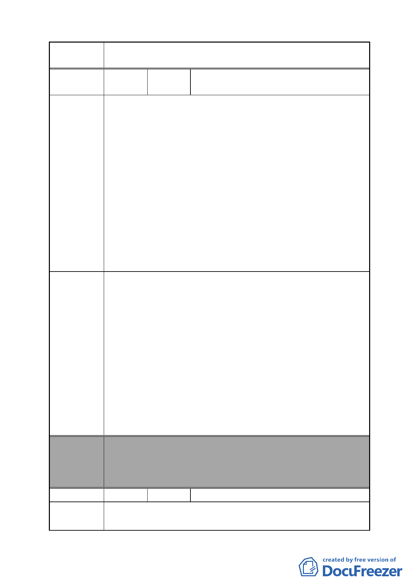

案 名 變更臺北市南港區鐵路地下化沿線土地主要計畫案
編號
陳情理由
建議辦法
委員會
決議
編號
陳情理由
54
陳情人
林國良、葉鴻森（附昆陽街西側全體住戶
連署書）
1.先前昆陽街曾經討論過要拓寬事宜，是因為當時昆陽街有平
交道阻礙交通造成不便，如今昆陽街在鐵路地下化之後，塞
車的狀況已不復見，因此昆陽街實沒有拓寬之必要性。
2.在未來捷運板南線延伸到南港車站之後，至南港展覽館昆陽
站、音樂中心或搭乘三鐵之人車潮將順移，昆陽站已喪失轉
運功能，屆時人、車流量將會比現況減少，因此昆陽街實沒
有拓寬之必要性。
3.本次昆陽街拓寬規劃案有些瑕疵疑點，實無法得到道路拓寬
的實質效益。因拓寬昆陽街西側至 108 號止，為 15 公尺寬
之道路，但自 116 號（印刷廠）起至昆陽站 4 號出口之道路
卻又縮小，就算連 116 號（印刷廠）及忠孝東路 449 號也退
縮 5 公尺，但是因為捷運出口大排氣房阻礙無法拓寬（已無
腹地），形成街頭寬巷尾小的道路，反而容易造成交通打結，
因此昆陽街實沒有拓寬之必要性。。
1.建議昆陽街不拓寬。
2.若考量往後交通流量因素而拓寬道路，則建議新增道路因
應，可利用南港路 3 段 49 號加油站和國產水泥之現有道路，
取代昆陽街之拓寬。
好處 1：只要打通鐵路局至忠孝東路即可，不用整條昆陽街徵
收、拆屋，侵害人民財產權益，也符合經濟效益比例
原則。
好處 2：未來昆陽站 1 號出口及其周邊住、商家，多了一條道
路通行，增加其便利性。
好處 3：未來昆陽街西側都市更新重建時，按容積率、建蔽率
因素而內縮，則自然達成昆陽街拓寬之需求，免除整
條昆陽街徵收、拆屋、侵害人民財產權益、平息民院、
符合經濟效益原則。
本案除文字誤繕應再作修正外，其餘依市府本次會議所送修
正計畫書內容通過。
（市府本次會議所送修正計畫書，本案將不拓寬昆陽街，逕
依現行規定辦理）
55 陳情人 智冠科技股份有限公司董事長王俊博
1.資訊服務業人才培養不易，十多年已在此生根，智冠科技一
千多名員工，住在附近、家在附近、夫婦工作上班在附近、
- 58 -